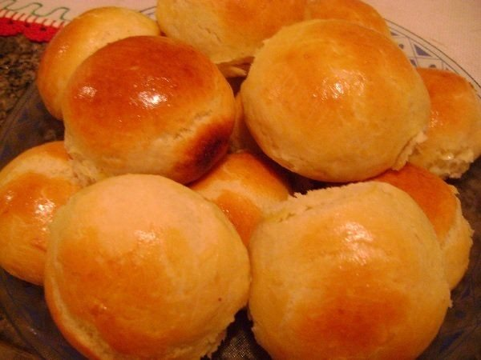

Salgados · Massas fritas/assadas
Pãezinhos rápidos

Ingredientes
- 2 xícaras de farinha de trigo
- 2 ½ colheres (chá) de fermento em pó
- 1 colher (chá) de sal
- ⅓ xícara de manteiga ou margarina gelada
- Farinha de trigo para polvilhar
Modo de preparo
- Preaqueça o forno em temperatura alta (250 °C). Numa tigela, peneire a farinha, o fermento e o sal. Adicione a manteiga e, com a ajuda de duas facas, corte-a em pedacinhos e vá misturando aos ingredientes secos até obter uma farofa.
- Coloque a farofa sobre uma superfície de trabalho e amasse até incorporar bem todos os ingredientes. Polvilhe a superfície de trabalho com farinha e, usando as mãos, abra a massa até ficar com 1 cm de espessura.
- Com um cortador de biscoitos com 5 cm de diâmetro, recorte toda a massa.
- Coloque os pãezinhos numa assadeira sem untar e leve ao forno preaquecido até ficarem ligeiramente dourados (cerca de 12 a 15 minutos). Retire do forno, deixe esfriar e congele.
Observação
Você pode variar o sabor dos pães acrescentando alcaravia (kümmel), erva-doce ou linguiça antes de assar a massa. Congelamento: leve os pãezinhos ao freezer, cobertos com plástico, até congelarem; passe-os para um saco plástico, retire o ar e vede bem; etiquete e congele. Descongelamento: em temperatura ambiente por cerca de 1 hora.